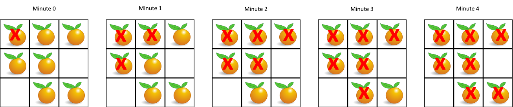

994. 腐烂的橘子
多源 BFS：所有烂橘子一开始就一起入队当火种，一轮扩散一分钟；扫完还有鲜橘就是 -1。
思路
- 这是「多个起点同时扩散」的最短时间问题 → 多源 BFS：把所有初始烂橘子一起入队，距离场天然正确。
- 一轮 = 弹空当前队列（同一分钟的火种一起扩散），
minutes++；新烂的在入队前就改成 2，防重复入队。 - 循环条件
队列非空 && fresh > 0：鲜橘清零就提前停，少算无用轮次。 - 结束时
fresh > 0说明有鲜橘被空格隔开 → 返回 -1；本来就没鲜橘则返回 0。
图解
最优解
1import java.util.*;2 3class Solution {4 public int orangesRotting(int[][] grid) {5 int m = grid.length, n = grid[0].length, fresh = 0;6 Queue<Integer> queue = new ArrayDeque<>();7 // 多源 BFS：所有烂橘子一起入队，都是第 0 分钟的火种8 for (int r = 0; r < m; r++) {9 for (int c = 0; c < n; c++) {10 if (grid[r][c] == 2) queue.offer(r * n + c);11 else if (grid[r][c] == 1) fresh++;12 }13 }14 int[][] dirs = {{1, 0}, {-1, 0}, {0, 1}, {0, -1}};15 int minutes = 0;16 // 一轮 = 当前队列里的烂橘子同时扩散一步17 while (!queue.isEmpty() && fresh > 0) {18 minutes++;19 for (int sz = queue.size(); sz > 0; sz--) {20 int p = queue.poll();21 int r = p / n, c = p % n;22 for (int[] d : dirs) {23 int nr = r + d[0], nc = c + d[1];24 if (nr >= 0 && nr < m && nc >= 0 && nc < n && grid[nr][nc] == 1) {25 grid[nr][nc] = 2; // 入队前先变烂，防止重复入队26 fresh--;27 queue.offer(nr * n + nc);28 }29 }30 }31 }32 // 还有鲜橘够不着 → -1；否则分钟数就是答案（本来就没鲜橘时是 0）33 return fresh > 0 ? -1 : minutes;34 }35}题目
在给定的 m x n 网格 grid 中，每个单元格可以有以下三个值之一：
- 值
0代表空单元格； - 值
1代表新鲜橘子； - 值
2代表腐烂的橘子。
每分钟，腐烂的橘子 周围 4 个方向上相邻 的新鲜橘子都会腐烂。
返回 直到单元格中没有新鲜橘子为止所必须经过的最小分钟数。如果不可能，返回 -1 。
示例 1：

输入：grid = [[2,1,1],[1,1,0],[0,1,1]] 输出：4
示例 2：
输入：grid = [[2,1,1],[0,1,1],[1,0,1]] 输出：-1 解释：左下角的橘子（第 2 行， 第 0 列）永远不会腐烂，因为腐烂只会发生在 4 个方向上。
示例 3：
输入：grid = [[0,2]] 输出：0 解释：因为 0 分钟时已经没有新鲜橘子了，所以答案就是 0 。
提示：
m == grid.lengthn == grid[i].length1 <= m, n <= 10grid[i][j]仅为0、1或2
题面取自力扣当前版本。
数据快照 2026-11-04。题面版权归力扣所有，本站点仅供本人学习使用，请勿对外发布。